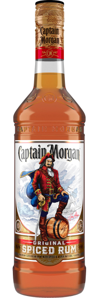

← Back to Rums

Captain Morgan Original Spiced Rum
Origin: Jamaica
Set sail for adventure with Captain Morgan Original Spiced Rum! Famous for its smooth, rich flavor and subtle spice, this rum is perfect for lively gatherings and unforgettable nights. Unleash your inner captain and make every moment legendary!
Signature Cocktail: Captain & Cola
- 50ml Captain Morgan Original Spiced Rum
- 100ml cola
- Lime wedge
- Ice cubes
Instructions: Fill a glass with ice, pour in Captain Morgan, top with cola, and garnish with a lime wedge. Cheers to good times!